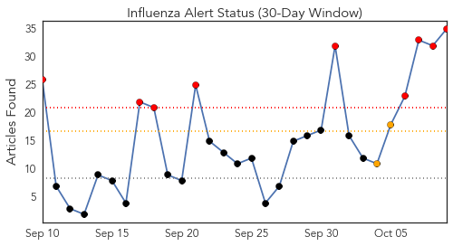
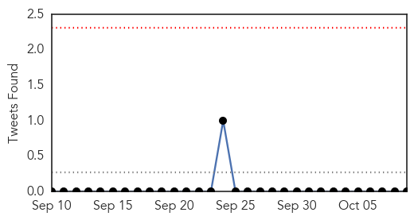
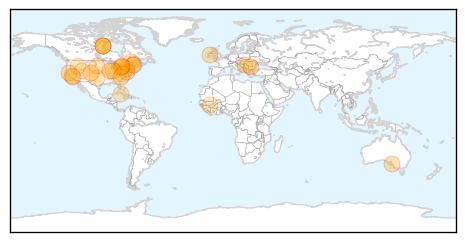
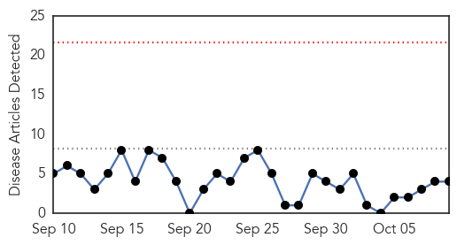
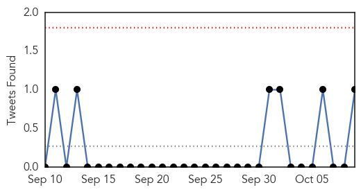
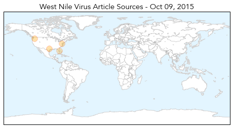

Influenza
30-Day Web Trend
8 alerts, 2 warnings

30-Day Twitter Trend
0 alerts, 0 warnings

Article Locations
Article Confidences
Top Articles:
- 0.995
- What you need to know about flu shots - KOAA.com
- 0.994
- GOVERNOR MARKELL AND PUBLIC HEALTH URGE FLU VACCINATION
- 0.988
- Flu vaccine available at Health Department
- 0.987
- Switzerland variant influenza strain to cause epidemic this year
- 0.977
- Health commissioner urges Indiana residents to get flu shots
- 0.971
- Flue vaccine expected to be stronger than last year's
- 0.970
- Get your flu shot; it's never too early
- 0.952
- Get your flu shots
- 0.943
- Vaccine Against Influenza Ineffective One Day
- 0.930
- County Health Department schedules flu vaccine clinic
- 0.925
- Ontario sticks with flu message
- 0.925
- Guest View: Budget impasse devastating public health services in Illinois
- 0.920
- Strong and Kingfield Health Centers to offer flu clinics for MSAD #58 students
- 0.898
- Today's stories from newspapers in Flamborough
- 0.898
- Today's stories from newspapers in Flamborough
- 0.898
- Today's stories from newspapers in Flamborough
- 0.898
- Today's stories from newspapers in Flamborough
- 0.898
- Today's stories from newspapers in Flamborough
- 0.898
- Today's stories from newspapers in Flamborough
- 0.898
- Today's stories from newspapers in Flamborough
- 0.887
- Stanford Medicine Profiles
- 0.883
- Food, water and health care: WHO reviews basic services for refugees crossing Serbia
- 0.879
- Regional Health now offering flu vaccinations
- 0.851
- Toddlers infected by identical strains of E. coli — Health — Bangor Daily News — BDN Maine
- 0.837
- FLU SEASON: Clinics being planned by health unit
- 0.806
- Today's stories from newspapers in Caledon
- 0.806
- Today's stories from newspapers in Caledon
- 0.806
- Today's stories from newspapers in Caledon
- 0.751
- October 9, 2015 Archives
- 0.751
- October 9, 2015 Archives
- 0.751
- October 9, 2015 Archives
- 0.751
- October 8, 2015 Archives
- 0.751
- October 8, 2015 Archives
- 0.622
- PPD gets medical-products, avian-flu research contracts with U.S. Army, BARDA
- 0.560
- Which Vaccination Exemptions Are Allowed by Virginia?
Top Tweets:
-
No tweets found for Oct 09, 2015
West Nile Virus
30-Day Web Trend
0 alerts, 0 warnings

30-Day Twitter Trend
0 alerts, 0 warnings

Article Locations
Article Confidences

Top Articles:
Top Tweets:
- 0.658
- Flavivirus news: 22 cases of West Nile virus in Washington, 1 death - KOMO News: 22 cases of We... http://t.co/TQm0q0z9Jk pathogenposse